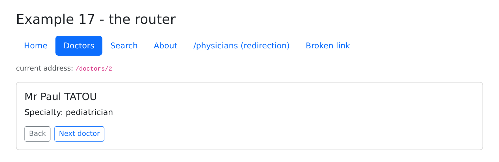
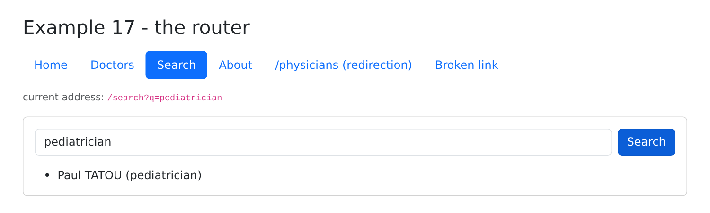
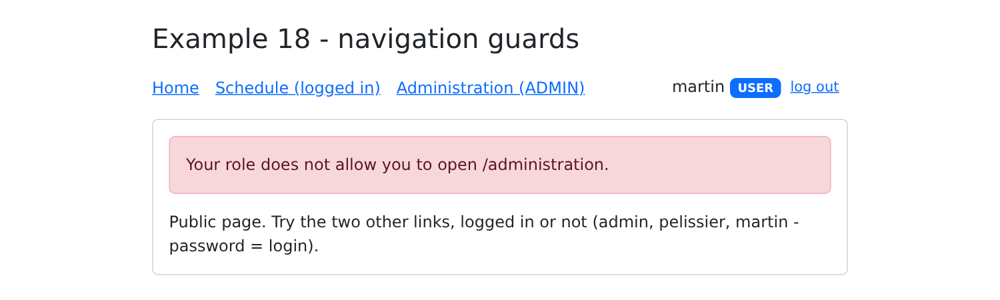

4. Routing
4.1. Beispiel 17: Der Router
Eine [Angular]-Anwendung ist eine Single-Page-Anwendung: Der Browser lädt nur eine einzige HTML-Seite. Die Anwendung [RdvMedecins] hat jedoch mehrere Seiten (/login, /schedule, /doctors ...), jede mit ihrer eigenen URL, die als Lesezeichen gespeichert oder neu geladen werden kann. Das ist die Aufgabe des [Angular]-Routers: Er ordnet jeder URL eine Komponente zu – die „Seite“ – und zeigt diese Komponente an, wenn sich die URL ändert, ohne eine Anfrage an den Server zu senden.
| 17-router/src/
├── app/
│ ├── pages/
│ │ ├── home.ts
│ │ ├── doctor-list.ts
│ │ ├── doctor-detail.ts
│ │ ├── search.ts
│ │ ├── about.ts
│ │ └── not-found-page.ts
│ ├── data.ts three "hard-coded" doctors
│ ├── app.routes.ts the routes
│ ├── app.config.ts the configuration of the application
│ ├── app.ts
│ └── app.html
├── index.html
└── main.ts
|
4.1.1. Die Routen
| // =========================================================================
// 17-router/src/app/app.routes.ts - die ROUTEN der Anwendung
// -------------------------------------------------------------------------
// Eine Angular-Anwendung ist eine Single-Page-Anwendung (SPA: Single
// Page Application): Der Browser lädt nur EINE HTML-Seite. Wird ein
// interner Link angeklickt, wird keine Anfrage an den Server gesendet: Der
// Router ändert die vom Browser angezeigte Adresse und ersetzt die
// in <router-outlet> angezeigte Komponente.
//
// Eine Route ordnet einen PFAD einer KOMPONENTE (einer "Seite") zu:
// 'doctors/:id' :id ist ein Parameter (/doctors/2 -> id = "2");
// '**' beliebiger Pfad: die Seite "nicht gefunden". Die
// Routen werden der Reihe nach geprüft: Sie steht ZULETZT.
// title: der Titel des Browser-Tabs, wenn die Seite angezeigt wird.
// =========================================================================
import { Routes } from '@angular/router';
import { Home } from './pages/home';
import { DoctorList } from './pages/doctor-list';
import { DoctorDetail } from './pages/doctor-detail';
import { Search } from './pages/search';
import { NotFoundPage } from './pages/not-found-page';
export const routes: Routes = [
{ path: '', component: Home, title: 'Home' },
{ path: 'doctors', component: DoctorList, title: 'Doctors' },
{ path: 'doctors/:id', component: DoctorDetail, title: 'A doctor' },
{ path: 'search', component: Search, title: 'Search' },
// VERZÖGERTES Laden: der Code dieser Seite wird erst beim
// ersten Besuch heruntergeladen (der Compiler macht daraus eine eigene Datei)
{ path: 'about', loadComponent: () => import('./pages/about'), title: 'About' },
// eine Weiterleitung: die alte Adresse führt zur neuen
{ path: 'physicians', redirectTo: 'doctors' },
{ path: '**', component: NotFoundPage, title: 'Page not found' },
];
|
- Zeile 24: Die Routen bilden ein Array von Objekten des Typs [Routes];
- Zeile 25: der leere Pfad: die Startseite unter der Adresse /. Ein / wird nie an den Anfang eines Pfads gesetzt;
- Zeile 27: [:id] ist ein Parameter: /doctors/1, /doctors/2 ... zeigen alle die Komponente [DoctorDetail] an, die den Wert von [id] erhält;
- Zeile 31: [loadComponent] ersetzt [component]: Die Komponente wird erst beim ersten Besuch der Seite geladen. Der Compiler legt ihren Code in einer separaten Datei ab, die in diesem Moment heruntergeladen wird; das beschleunigt das Laden der Anwendung. Wir werden dies in der Fallstudie für alle Seiten tun;
- Zeile 33: eine Weiterleitung: /physicians führt zu /doctors;
- Zeile 34: [**]: jeder beliebige Pfad. Da die Pfade der Reihe nach geprüft werden, kommt dieser nur zum Zug, wenn kein anderer passt: Das ist die Seite „Seite nicht gefunden“;
- [title]: der Titel des Browser-Tabs, wenn die Seite angezeigt wird.
4.1.2. Konfiguration der Anwendung
| // =========================================================================
// 17-router/src/app/app.config.ts
// -------------------------------------------------------------------------
// provideRouter(routes): wir fügen der Anwendung den Router mit seinen
// Routen (app.routes.ts) hinzu. withComponentInputBinding(): die Parameter
// der Adresse (/doctors/:id, ?q=...) werden den Komponenten der Seiten
// als INPUTS (input()) übergeben - siehe pages/doctor-detail.ts.
// =========================================================================
import { ApplicationConfig } from '@angular/core';
import { provideRouter, withComponentInputBinding } from '@angular/router';
import { routes } from './app.routes';
export const appConfig: ApplicationConfig = {
providers: [provideRouter(routes, withComponentInputBinding())],
};
|
Bisher stand die Konfiguration der Anwendung in der Datei [main.ts]. Sie wird nun separat in [app.config.ts] abgelegt, wie in Projekten, die mit dem Befehl [ng new] erstellt werden:
- Zeile 15: [provideRouter] fügt der Anwendung den Router samt seinen Routen hinzu. [withComponentInputBinding()] übergibt die Parameter der Adresse als Eingaben an die Seitenkomponenten ([input()], Beispiel 10): Das ist der einfachste Weg, sie zu lesen.
| // =========================================================================
// 17-router/src/main.ts
// -------------------------------------------------------------------------
// Die Konfiguration der Anwendung (ihre "Provider") wird getrennt
// in app.config.ts abgelegt: Das ist die übliche Struktur eines Angular-Projekts.
// =========================================================================
import { bootstrapApplication } from '@angular/platform-browser';
import { appConfig } from './app/app.config';
import { App } from './app/app';
bootstrapApplication(App, appConfig).catch((error) => console.error(error));
|
- Zeile 12: [bootstrapApplication] erhält die Konfiguration.
| <!doctype html>
<html lang="en">
<head>
<meta charset="utf-8">
<title>Example 17 - the router</title>
<base href="/">
<meta name="viewport" content="width=device-width, initial-scale=1">
</head>
<body>
<app-root></app-root>
</body>
</html>
|
- Zeile 6: [<base href="/">]: die Adresse, von der aus der Router die Pfade berechnet. Ohne sie würden mehrstufige Adressen (/doctors/2) nicht funktionieren.
4.1.3. Die Anwendungs-Shell
Die Root-Komponente wird zu einer Shell: Sie enthält die Elemente, die allen Seiten gemeinsam sind (hier den Titel und die Links), sowie einen Bereich, in dem die aktuelle Seite angezeigt wird.
| // =========================================================================
// 17-router/src/app/app.ts - die "Shell" der Anwendung
// -------------------------------------------------------------------------
// - routerLink="...": ein interner Link. Auf einem <a>-Tag erzeugt er ein
// echtes href, aber ein Klick lädt die Seite nicht neu: Der Router
// übernimmt. routerLinkActive="active" setzt die Klasse "active" (die von
// Bootstrap) auf den Link der angezeigten Seite;
// - <router-outlet />: die Stelle, an der die Komponente der
// aktuellen Route angezeigt wird.
// =========================================================================
import { Component, inject } from '@angular/core';
import { toSignal } from '@angular/core/rxjs-interop';
import { NavigationEnd, Router, RouterLink, RouterLinkActive, RouterOutlet } from '@angular/router';
import { filter, map } from 'rxjs';
@Component({
selector: 'app-root',
imports: [RouterLink, RouterLinkActive, RouterOutlet],
templateUrl: './app.html',
})
export class App {
private readonly router = inject(Router);
// die aktuelle Adresse als Signal: router.events ist ein Stream
// (Observable, siehe Beispiel 19) von Navigationsereignissen; wir behalten das
// Ende jeder Navigation, und toSignal macht daraus ein Signal
protected readonly address = toSignal(
this.router.events.pipe(
filter((e) => e instanceof NavigationEnd),
// decodeURIComponent: %20 wird wieder zu einem Leerzeichen
map((e) => decodeURIComponent(e.urlAfterRedirects)),
),
{ initialValue: '' },
);
}
|
- Zeile 19: die Router-Direktiven, die vom Template verwendet werden;
- Zeilen 28–35: die aktuelle URL, unter den Links angezeigt. [router.events] ist ein Observable (ein Strom von Ereignissen, wie Beispiel 19 zeigt), das jede Phase der Navigation meldet. Wir behalten nur die Endpunkte der Navigation (Zeile 30), extrahieren daraus die Adresse – einschließlich eventueller Weiterleitungen (Zeile 32) – und [toSignal] wandelt den Strom in ein Signal um, das im Template verwendet werden kann.
| <div class="container py-4">
<h1 class="h3 mb-3">Example 17 - the router</h1>
<nav class="nav nav-pills mb-3">
<!-- routerLinkActiveOptions exact: "/" darf auf /doctors nicht aktiv sein -->
<a class="nav-link" routerLink="/" routerLinkActive="active" [routerLinkActiveOptions]="{ exact: true }">Home</a>
<a class="nav-link" routerLink="/doctors" routerLinkActive="active">Doctors</a>
<!-- [queryParams]: die Parameter nach dem ? (/search?q=general practitioner);
queryParams: 'ignored': der Link bleibt aktiv, egal welche Suche -->
<a class="nav-link" routerLink="/search" [queryParams]="{ q: 'general practitioner' }" routerLinkActive="active"
[routerLinkActiveOptions]="{ paths: 'exact', queryParams: 'ignored', fragment: 'ignored', matrixParams: 'ignored' }">Search</a>
<a class="nav-link" routerLink="/about" routerLinkActive="active">About</a>
<a class="nav-link" routerLink="/physicians">/physicians (redirection)</a>
<a class="nav-link" routerLink="/unknown-page">Broken link</a>
</nav>
<p class="small text-muted">current address: <code>{{ address() }}</code></p>
<div class="card p-3">
<router-outlet />
</div>
</div>
|
- Zeile 5: [routerLink]: ein interner Link. Für ein [<a>]-Tag erzeugt er ein gültiges [href]-Attribut (der Link kann in einem neuen Tab geöffnet werden), aber ein Klick darauf lädt die Seite nicht neu: Der Router ändert die Adresse und die Anzeige. [routerLinkActive="active"] wendet die Klasse [active] (abgeleitet von [Bootstrap]) auf den Link der angezeigten Seite an. Ohne die Option [exact] wäre der Link / auf allen Seiten aktiv, da alle Adressen mit / beginnen;
- Zeilen 9–10: [[queryParams]]: die Parameter, die nach dem [?] in der URL stehen (/search?q=general practitioner). Die Option [queryParams: 'ignored'] hält den Link unabhängig von der Suche aktiv;
- Zeilen 12–13: ein Link auf die Weiterleitung und ein Link auf eine Adresse, die nicht existiert;
- Zeile 17: [<router-outlet />]: die Stelle, an der die Komponente der aktuellen Route angezeigt wird.
4.1.4. Die Seiten
| // "fest codierte" Daten, um in diesem Beispiel nicht von einem Server abzuhängen
export interface Doctor {
id: number;
title: string;
firstName: string;
lastName: string;
specialty: string;
}
export const DOCTORS: Doctor[] = [
{ id: 1, title: 'Mme', firstName: 'Marie', lastName: 'PELISSIER', specialty: 'general practitioner' },
{ id: 2, title: 'Mr', firstName: 'Paul', lastName: 'TATOU', specialty: 'pediatrician' },
{ id: 3, title: 'Melle', firstName: 'Sophie', lastName: 'DUPONT', specialty: 'general practitioner' },
];
|
| import { Component } from '@angular/core';
@Component({
selector: 'app-home',
template: `
<p class="mb-0">Welcome. Click on the links: the address of the browser changes, the page is never
reloaded (open the Network tab of the developer tools to check it). The Back and
Forward buttons of the browser work, as well as reloading (F5) any page.</p>
`,
})
export class Home {}
|
Eine Seite ist eine gewöhnliche Komponente. Sie hat nichts Besonderes.
| // 17-router/src/app/pages/doctor-list.ts - Links mit einem Parameter
import { Component } from '@angular/core';
import { RouterLink } from '@angular/router';
import { DOCTORS } from '../data';
@Component({
selector: 'app-doctor-list',
imports: [RouterLink],
template: `
<ul class="mb-0">
@for (m of doctors; track m.id) {
<!-- [routerLink] mit einem Array: der Router setzt die Adresse /doctors/2 zusammen -->
<li><a [routerLink]="['/doctors', m.id]">{{ m.title }} {{ m.firstName }} {{ m.lastName }}</a></li>
}
</ul>
`,
})
export class DoctorList {
protected readonly doctors = DOCTORS;
}
|
- Zeile 13: [[routerLink]] erhält hier ein Array: Der Router setzt die Adresse aus dessen Elementen zusammen (/doctors/2).
| // =========================================================================
// 17-router/src/app/pages/doctor-detail.ts - eine Seite mit einem Parameter
// -------------------------------------------------------------------------
// Der Parameter :id kommt als INPUT an (dank withComponentInputBinding,
// siehe app.config.ts), als String: Es genügt, einen
// Input mit demselben Namen zu deklarieren. Die Komponente hängt dann nicht mehr vom
// Router ab: Sie könnte auch als <app-doctor-detail id="2"> verwendet werden.
// Router.navigate(...): PER CODE navigieren; Location.back(): zur
// vorherigen Seite zurückgehen, wie der Zurück-Button des Browsers.
// =========================================================================
import { Component, computed, inject, input } from '@angular/core';
import { Location } from '@angular/common';
import { Router } from '@angular/router';
import { DOCTORS } from '../data';
@Component({
selector: 'app-doctor-detail',
template: `
@if (doctor(); as m) {
<h2 class="h5">{{ m.title }} {{ m.firstName }} {{ m.lastName }}</h2>
<p>Specialty: {{ m.specialty }}</p>
<div class="d-flex gap-2">
<button class="btn btn-sm btn-outline-secondary" (click)="back()">Back</button>
<button class="btn btn-sm btn-outline-primary" (click)="next()">Next doctor</button>
</div>
} @else {
<p class="text-danger mb-0">Doctor no. {{ id() }} does not exist.</p>
}
`,
})
export class DoctorDetail {
readonly id = input.required<string>();
private readonly router = inject(Router);
private readonly location = inject(Location);
// computed: Beim Wechsel von /doctors/1 zu /doctors/2 WIEDERVERWENDET Angular
// dieselbe Komponente und ändert nur den Input id - das computed folgt
protected readonly doctor = computed(() => DOCTORS.find((m) => m.id === Number(this.id())) ?? null);
protected back(): void {
this.location.back();
}
protected next(): void {
const id = (Number(this.id()) % DOCTORS.length) + 1;
this.router.navigate(['/doctors', id]);
}
}
|
- Zeile 33: Der Routenparameter [:id] wird an die gleichnamige Eingabe übergeben. Wie alles, was aus einer Adresse stammt, ist er eine Zeichenkette;
- Zeile 39: Der angezeigte Arzt wird aus der Eingabe berechnet. Beim Wechsel von /doctors/1 zu /doctors/2 erzeugt [Angular] die Komponente nicht neu: Es ändert nur den Wert der Eingabe, und [computed] folgt;
- Zeilen 27–29: Ein unbekannter Bezeichner (/doctors/9) wird gemeldet;
- Zeile 42: [Location.back()]: zurück zur vorherigen Seite, wie mit der Zurück-Schaltfläche des Browsers;
- Zeile 47: [Router.navigate]: Navigation, per Code ausgelöst, mit demselben Array wie bei [[routerLink]].
| // =========================================================================
// 17-router/src/app/pages/search.ts - eine von der URL gesteuerte Seite
// -------------------------------------------------------------------------
// /search?q=pediatrician: wie beim GET-Formular des NestJS-Kurses wird die
// Seite vollständig durch ihre Adresse beschrieben: Sie lässt sich als Lesezeichen speichern,
// neu laden und per Zurück erreichen. Der Parameter q kommt ebenfalls
// als Input der Komponente an.
// =========================================================================
import { Component, computed, inject, input, linkedSignal } from '@angular/core';
import { FormsModule } from '@angular/forms';
import { Router } from '@angular/router';
import { DOCTORS } from '../data';
@Component({
selector: 'app-search',
imports: [FormsModule],
template: `
<form class="d-flex gap-2 mb-3" (ngSubmit)="search()">
<input name="input" class="form-control" placeholder="name or specialty" [(ngModel)]="input">
<button class="btn btn-primary">Search</button>
</form>
<ul class="mb-0">
@for (m of results(); track m.id) {
<li>{{ m.firstName }} {{ m.lastName }} ({{ m.specialty }})</li>
} @empty {
<li class="text-muted">No result.</li>
}
</ul>
`,
})
export class Search {
readonly q = input<string>(); // ?q=... (undefined, wenn nicht vorhanden)
private readonly router = inject(Router);
// das Feld startet mit dem Wert der URL und folgt ihr bei Änderungen
// (Zurück-Button), bleibt dabei aber bearbeitbar: ein linkedSignal
protected readonly input = linkedSignal(() => this.q() ?? '');
protected readonly results = computed(() => {
const q = (this.q() ?? '').toLowerCase();
return DOCTORS.filter((m) => `${m.firstName} ${m.lastName} ${m.specialty}`.toLowerCase().includes(q));
});
protected search(): void {
// wir ändern die URL; die Anzeige folgt der URL (Input q)
this.router.navigate(['/search'], { queryParams: { q: this.input() } });
}
}
|
Diese Seite wird vollständig durch ihre Adresse beschrieben, genau wie die eines GET-Formulars: Sie können sie als Lesezeichen speichern, neu laden oder über die Zurück-Schaltfläche wieder aufrufen.
- Zeile 33: Der Parameter [q] aus der Adresse wird ebenfalls als Eingabe übergeben; fehlt er, ist sein Wert [undefined];
- Zeile 38: Das Eingabefeld ist ein [linkedSignal]: Es übernimmt den Wert der Adresse, aktualisiert sich entsprechend, wenn sich die Adresse ändert (über die Zurück-Schaltfläche), bleibt aber vom Benutzer editierbar;
- Zeilen 40–43: Die Ergebnisse hängen von der Adresse ab, nicht von der Eingabe: Sie ändern sich nur, wenn das Formular abgeschickt wird;
- Zeile 47: Das Abschicken des Formulars ändert die Adresse, wodurch sich die Eingabe [q] ändert, wodurch sich die Ergebnisse ändern.
| // 17-router/src/app/pages/about.ts - eine bei Bedarf geladene Seite
// "export default": loadComponent: () => import('./pages/about') findet
// die Komponente, ohne dass man sie benennen muss
import { Component } from '@angular/core';
@Component({
selector: 'app-about',
template: `<p class="mb-0">This page was downloaded on the first visit (Network tab: a file
chunk-XXXX.js). Its tab title comes from the route.</p>`,
})
export default class About {}
|
- Zeile 11: [export default]: Die Funktion [loadComponent] in der Route ([import('./pages/about')]) findet die Komponente, ohne dass ihr Name angegeben werden muss.
| import { Component, inject } from '@angular/core';
import { Router } from '@angular/router';
@Component({
selector: 'app-not-found-page',
template: `<p class="text-danger mb-0">No page at the address <code>{{ address }}</code>.</p>`,
})
export class NotFoundPage {
protected readonly address = inject(Router).url;
}
|
- Zeile 9: [Router.url]: die angeforderte Adresse.
4.1.5. Ausführung
[npm start 17-router]; klicken Sie auf „Doctors“ und dann auf „Paul“ TATOU:

Klicken Sie auf „Search“, geben Sie „pediatrician“ ein und drücken Sie die Eingabetaste: Die Adresse ändert sich.

Der fehlerhafte Link führt zu einem Fehler „Seite nicht gefunden“:

Im Tab „Netzwerk“ der Entwicklertools des Browsers können Sie überprüfen, dass beim Klicken keine Seite vom Server angefordert wird, außer beim ersten Besuch der Seite „About“ (eine Datei namens [chunk-XXXX.js]). Sie können auch jede Seite neu laden (F5): Der Entwicklungsserver liefert stets [index.html] zurück, und der Router zeigt die Seite an, die der Adresse entspricht. Ein Produktionsserver muss dasselbe tun: Das wird der JSON-Server bei der Bereitstellung tun.
4.2. Beispiel 18: Guards zum Schutz von Seiten
Bestimmte Seiten der Anwendung [RdvMedecins] sind eingeschränkt: Der Terminkalender erfordert eine Anmeldung, und die Verwaltung der Ärzte erfordert die Rolle ADMIN. Auf der Serverseite verwendete der [NestJS]-Kurs Zugriffskontrollen ([JwtAuthGuard], [RolesGuard]). Der [Angular]-Router hat seine eigenen: Funktionen, die vor der Anzeige einer Route aufgerufen werden und die Navigation entweder erlauben oder auf eine andere Adresse umleiten können.
Dieses Beispiel simuliert die Anmeldung ohne Server: Drei Konten sind fest im Code hinterlegt.
| 18-guards/src/app/
├── pages/
│ ├── home.ts public page
│ ├── login.ts public page
│ ├── schedule.ts requires being logged in
│ └── administration.ts requires the ADMIN role
├── session.service.ts the logged-in user
├── guards.ts the guards
├── app.routes.ts
├── app.config.ts
├── app.ts
└── app.html
|
4.2.1. Die Sitzung
| // =========================================================================
// 18-guards/src/app/session.service.ts - eine SIMULIERTE Sitzung (kein Server)
// -------------------------------------------------------------------------
// Der angemeldete Benutzer, in einem Root-Service: Alle Komponenten und
// alle Guards, die ihn injizieren, teilen dieselbe Instanz. (Beispiel 23 macht
// dasselbe mit einem echten Server.)
// =========================================================================
import { Injectable, signal } from '@angular/core';
export type Role = 'ADMIN' | 'DOCTOR' | 'USER';
export interface User {
login: string;
role: Role;
}
// drei "fest codierte" Konten (Passwort = Login)
const ACCOUNTS: Record<string, Role> = { admin: 'ADMIN', pelissier: 'DOCTOR', martin: 'USER' };
@Injectable({ providedIn: 'root' })
export class SessionService {
private readonly _user = signal<User | null>(null);
readonly user = this._user.asReadonly();
logIn(login: string, password: string): boolean {
const role = Object.hasOwn(ACCOUNTS, login) ? ACCOUNTS[login] : undefined;
if (role === undefined || password !== login) {
return false;
}
this._user.set({ login, role });
return true;
}
logOut(): void {
this._user.set(null);
}
}
|
- Zeile 11: die drei Rollen der Anwendung [RdvMedecins];
- Zeile 19: drei Konten, jeweils mit einem Passwort, das dem Benutzernamen entspricht;
- Zeilen 23–24: der angemeldete Benutzer ([null] , falls es keinen gibt), in einem Signal, das nur der Service ändern kann. Da es nur einen Service gibt, sehen die Komponenten und Guards, die ihn injizieren, alle denselben Benutzer;
- Zeile 27: [Object.hasOwn]: Es werden nur die Schlüssel beibehalten, die dem Objekt [ACCOUNTS] eigen sind. Ohne diese Vorsichtsmaßnahme würde der Login „constructor“ eine Eigenschaft finden, die alle [JavaScript]-Objekte erben;
- Zeilen 26–33: Die Anmeldung gelingt, wenn das Konto existiert und das Passwort korrekt ist.
4.2.2. Die Guards
| // =========================================================================
// 18-guards/src/app/guards.ts - Navigations-GUARDS
// -------------------------------------------------------------------------
// Ein Guard (CanActivateFn) ist eine Funktion, die der Router aufruft, BEVOR
// er eine Route anzeigt, die ihn deklariert (canActivate: [...]). Sie liefert:
// - true : die Navigation wird fortgesetzt;
// - einen UrlTree (eine Adresse, erstellt mit router.createUrlTree): die
// Navigation wird durch eine Weiterleitung zu dieser Adresse ersetzt.
// Ein Guard kann Services injizieren (inject): Er läuft im
// Injektionskontext der Anwendung.
//
// Er ist das clientseitige Äquivalent der NestJS-Guards (JwtAuthGuard,
// RolesGuard) - mit einem GRUNDLEGENDEN Unterschied: Ein Client-Guard ist
// nur eine Erleichterung. Der Code des Clients liegt in der Hand des Benutzers, der
// ihn nach Belieben ändern kann. Der eigentliche Schutz der Daten bleibt der
// des SERVERS (siehe das Kapitel über die Blackbox).
// =========================================================================
import { inject } from '@angular/core';
import { CanActivateFn, Router } from '@angular/router';
import { Role, SessionService } from './session.service';
// die Seite erfordert eine Anmeldung
export const loginRequired: CanActivateFn = (_route, state) => {
if (inject(SessionService).user() !== null) {
return true;
}
// nicht angemeldet: zur Login-Seite, mit Merken des gewünschten Ziels
return inject(Router).createUrlTree(['/login'], { queryParams: { redirect: state.url } });
};
// die Seite erfordert eine der in den Daten der Route aufgeführten Rollen (data.roles)
export const roleRequired: CanActivateFn = (route, state) => {
const roles = route.data['roles'] as Role[];
const user = inject(SessionService).user();
if (user !== null && roles.includes(user.role)) {
return true;
}
// angemeldet, aber nicht mit der richtigen Rolle: zurück zur Startseite, mit einem Grund
return inject(Router).createUrlTree(['/'], { queryParams: { denied: state.url } });
};
|
- Zeile 24: Ein Guard ist eine Funktion vom Typ [CanActivateFn]. Der Router übergibt ihr die zu aktivierende Route und den Navigationszustand (der die angeforderte Adresse enthält, [state.url]);
- Zeile 25: Ein Guard kann mit [inject] Services injizieren, wie eine Komponente;
- Zeile 26: [true]: Die Navigation wird fortgesetzt;
- Zeile 29: Andernfalls gibt der Guard eine andere Adresse zurück, erzeugt mit [createUrlTree]: Die Navigation wird durch eine Umleitung auf die Anmeldeseite ersetzt. Der Parameter [redirect] merkt sich die angeforderte Seite, um nach der Anmeldung dorthin zurückzukehren;
- Zeile 34: [route.data]: die freien Daten, die von der Route deklariert werden (hier die zugelassenen Rollen). Derselbe Guard dient somit für alle eingeschränkten Seiten, unabhängig von ihren Rollen;
- Zeile 40: Ein angemeldeter Benutzer mit einer unpassenden Rolle wird auf die Startseite umgeleitet, zusammen mit dem Grund der Ablehnung.
Die Kommentare in den Zeilen 12–16 sind wesentlich: Ein clientseitiger Guard ist lediglich eine Bequemlichkeit für den Benutzer, die ihm erspart, eine Seite zu öffnen, die möglicherweise nicht funktioniert. Der clientseitige Code läuft im Browser; der Benutzer kann ihn lesen und ändern. Der Schutz der Daten bleibt Aufgabe des Servers, der bei jeder Anfrage die Berechtigungen prüft.
4.2.3. Geschützte Routen
| // =========================================================================
// 18-guards/src/app/app.routes.ts - GESCHÜTZTE Routen
// -------------------------------------------------------------------------
// - canActivate: die Guards, die der Reihe nach passiert werden müssen;
// - data : freie Informationen, die an die Route angehängt sind (hier die
// erlaubten Rollen) und die der Guard liest.
// =========================================================================
import { Routes } from '@angular/router';
import { loginRequired, roleRequired } from './guards';
import { Home } from './pages/home';
import { Login } from './pages/login';
import { Schedule } from './pages/schedule';
export const routes: Routes = [
{ path: '', component: Home },
{ path: 'login', component: Login },
{ path: 'schedule', component: Schedule, canActivate: [loginRequired] },
{
path: 'administration',
// verzögertes Laden: der Code wird erst heruntergeladen, wenn die Guards passiert sind
loadComponent: () => import('./pages/administration'),
canActivate: [loginRequired, roleRequired],
data: { roles: ['ADMIN'] },
},
{ path: '**', redirectTo: '' },
];
|
- Zeile 18: [canActivate]: die Liste der Guards der Route;
- Zeile 22: Die Administrationsseite wird bei Bedarf geladen: Ihr Code wird nur heruntergeladen, wenn die Guards es erlauben;
- Zeile 23: zwei Guards, der Reihe nach aufgerufen: erstens angemeldet sein; zweitens die richtige Rolle haben;
- Zeile 24: die zugelassenen Rollen, die vom Guard [roleRequired] gelesen werden;
- Zeile 26: Jede unbekannte Adresse leitet auf die Startseite um.
| import { ApplicationConfig } from '@angular/core';
import { provideRouter, withComponentInputBinding } from '@angular/router';
import { routes } from './app.routes';
export const appConfig: ApplicationConfig = {
providers: [provideRouter(routes, withComponentInputBinding())],
};
|
Die Konfiguration ist dieselbe wie im vorherigen Beispiel.
4.2.4. Die Seiten
| // =========================================================================
// 18-guards/src/app/pages/login.ts
// -------------------------------------------------------------------------
// Nach der Anmeldung wird der Benutzer zu der Seite zurückgeschickt, die er
// öffnen wollte (Parameter ?redirect=..., vom Guard gesetzt), oder zur Startseite.
// router.navigateByUrl: zu einer vollständigen Adresse navigieren (/schedule?x=1).
// =========================================================================
import { Component, inject, input, signal } from '@angular/core';
import { FormsModule } from '@angular/forms';
import { Router } from '@angular/router';
import { SessionService } from '../session.service';
@Component({
selector: 'app-login',
imports: [FormsModule],
template: `
@if (redirect()) {
<p class="alert alert-warning">Log in to open {{ redirect() }}.</p>
}
<form class="d-flex flex-wrap gap-2" (ngSubmit)="submit()">
<input name="login" class="form-control w-auto" placeholder="login" autocomplete="username" [(ngModel)]="login">
<input name="password" type="password" class="form-control w-auto" placeholder="password"
autocomplete="current-password" [(ngModel)]="password">
<button class="btn btn-primary">Log in</button>
</form>
@if (error()) {
<p class="text-danger mt-2 mb-0">Incorrect login or password.</p>
}
`,
})
export class Login {
readonly redirect = input<string>();
private readonly session = inject(SessionService);
private readonly router = inject(Router);
protected readonly login = signal('');
protected readonly password = signal('');
protected readonly error = signal(false);
protected submit(): void {
this.error.set(!this.session.logIn(this.login().trim(), this.password()));
if (!this.error()) {
const redirect = this.redirect();
// wir akzeptieren nur einen INTERNEN Pfad: er beginnt mit /, aber nicht mit //
// (//site.com/... bezeichnet eine ANDERE Website) - keine Weiterleitung zu einer anderen Website
const internal = redirect !== undefined && redirect.startsWith('/') && !redirect.startsWith('//');
this.router.navigateByUrl(internal ? redirect : '/');
}
}
}
|
- Zeile 33: Der Parameter [redirect], der vom Guard in die Adresse eingefügt wurde, wird empfangen;
- Zeilen 18–20: Er wird dem Benutzer angezeigt;
- Zeile 41: die Anmeldung;
- Zeilen 43–47: Bei Erfolg wird der Benutzer auf die angeforderte Seite ([navigateByUrl] akzeptiert eine vollständige URL einschließlich Parametern) oder auf die Startseite umgeleitet. Der Parameter [redirect] stammt aus der URL: Jeder kann einen Link auf /login?redirect=//malicious-site.com erstellen. Zeile 46 akzeptiert daher nur einen Pfad, der intern zur Anwendung gehört.
| import { Component, input } from '@angular/core';
@Component({
selector: 'app-home',
template: `
<!-- ?denied=...: vom Guard roleRequired gesetzt, wenn die Rolle nicht passt -->
@if (denied()) {
<p class="alert alert-danger">Your role does not allow you to open {{ denied() }}.</p>
}
<p class="mb-0">Public page. Try the two other links, logged in or not (admin, pelissier, martin -
password = login).</p>
`,
})
export class Home {
readonly denied = input<string>();
}
|
- Zeile 15: der Grund einer Ablehnung, vom Guard [roleRequired] übermittelt.
| import { Component, inject } from '@angular/core';
import { SessionService } from '../session.service';
@Component({
selector: 'app-schedule',
template: `<p class="mb-0">The schedule of <strong>{{ session.user()?.login }}</strong>: this page requires being logged in.</p>`,
})
export class Schedule {
protected readonly session = inject(SessionService);
}
|
| import { Component } from '@angular/core';
@Component({
selector: 'app-administration',
template: `<p class="mb-0">Administration: page reserved for the ADMIN role, loaded on demand (Network tab:
its chunk-XXXX.js file is only downloaded on the first visit).</p>`,
})
export default class Administration {}
|
4.2.5. Die Shell
| import { Component, inject } from '@angular/core';
import { Router, RouterLink, RouterLinkActive, RouterOutlet } from '@angular/router';
import { SessionService } from './session.service';
@Component({
selector: 'app-root',
imports: [RouterLink, RouterLinkActive, RouterOutlet],
templateUrl: './app.html',
})
export class App {
protected readonly session = inject(SessionService);
private readonly router = inject(Router);
protected onLogOut(): void {
this.session.logOut();
this.router.navigate(['/']);
}
}
|
| <div class="container py-4" style="max-width: 720px">
<h1 class="h3 mb-3">Example 18 - navigation guards</h1>
<nav class="d-flex gap-3 align-items-center mb-3">
<a routerLink="/" routerLinkActive="fw-bold" [routerLinkActiveOptions]="{ exact: true }">Home</a>
<a routerLink="/schedule" routerLinkActive="fw-bold">Schedule (logged in)</a>
<a routerLink="/administration" routerLinkActive="fw-bold">Administration (ADMIN)</a>
<span class="ms-auto">
@if (session.user(); as u) {
{{ u.login }} <span class="badge text-bg-primary">{{ u.role }}</span>
<button class="btn btn-sm btn-link" (click)="onLogOut()">log out</button>
} @else {
<a routerLink="/login">log in</a>
}
</span>
</nav>
<div class="card p-3"><router-outlet /></div>
</div>
|
- Zeilen 8–13: der angemeldete Benutzer und seine Rolle oder ein Link auf die Anmeldeseite;
- Zeile 10: Die Abmeldung führt den Benutzer zur Startseite zurück (app.ts, Zeilen 14–17).
4.2.6. Ausführung
[npm start 18-guards]; klicken Sie ohne Anmeldung auf Administration: Der Guard [loginRequired] leitet auf die Anmeldeseite um und merkt sich dabei die angeforderte Seite.

Melden Sie sich als martin an, der die Rolle USER hat: Nach der Anmeldung werden Sie auf /administration umgeleitet; diesmal verweigert der Guard [roleRequired] die Navigation.

Wenn Sie als admin angemeldet sind, öffnet derselbe Link die Administrationsseite.